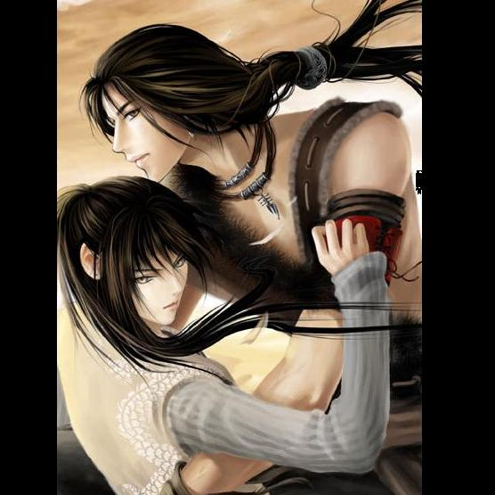

Forums galactiques > Taverne galactique : lieu de discussion informel > Salle de Combat Virtuel
Pages : 1 2
| Jiin Trag Réputation à la taverne : 80 31/10 ETU 11:35 | Score : 4 Détails Vous êtes devant une salle circulaire,un panneau holographique apparait.
Bienvenue visiteur!Vous vous tenez devant la SCV,Salle de Combat Vituel!Vous pourrez défiez n'importe qui dans cette salle et dévellopez votre style de combat!Mesurez vous aux plus forts,aux plus habiles des combattants dans des combats hyper réalistes ou tosu les coups sont permis.Evidemment,nos appareils de simulations nouvelle génération éviteront tous dégâts importants et la mort des participants!Alors venez,maitres de l'épée,du sabre ou autre! Un vaste arsenal s'offre à vous à l'entrée.Cependant le garde de sécurité vous signale que vos propres armes peuvent être accepter. __________________________________________________________ HRP:tout le monde l'aura comprisc'est une salle de combat RP.Je crois qu'il en existait déjà une il y a longtemps.Veillez à ne pas faire intervenir le perso de quelqu'un sans son autorisation et amusez vous bien! | ||
| in vador Réputation à la taverne : 4 31/10 ETU 11:45 | Score : 0 Détails Il faut payer pour utiliser votre simulateur?
| ||
| Ash Réputation à la taverne : 434  31/10 ETU 12:55 | Score : 0 Détails Ash entra, une dague à la main, un large sourire sur ses lèvres
Jiin... Super ta salle, au moins elle remplacera le dojo de Horohoro qui s'est fait demolir... Tu veux te battre contre moi ou pas? | ||
| Jiin Trag Réputation à la taverne : 80 31/10 ETU 13:33 | Score : 0 Détails Jiin sourit.
"Quand tu veux.Je manque d'exercices ces temps ci.Tu as une arme?je voudrais pas te faire trop mal non plus." | ||
| Horohoro Réputation à la taverne : 1130  31/10 ETU 15:50 | Score : 0 Détails Une secousse sismique secoua la salle.
Ban se tenait là, et il avait explosé le sol d'un coup de poing. Son aura envahissait la salle, fissurant les murs. "Qui a envie de se battre?" | ||
| Ash Réputation à la taverne : 434 31/10 ETU 16:36 | Score : 0 Détails Celui la faut le virer... Ou renforcer tes murs...
Il pourrait faire un gros desordre... mais moi je veux bien me battre | ||
| Horohoro Réputation à la taverne : 1130 31/10 ETU 16:45 | Score : 0 Détails Ban s'approcha d'Ash,
tout en s'allumant une cigarette, qui se trouvait être l'avant-dernière du paquet. "Faudra que je pense à en racheter..." Il se tourna ensuite vers Ash, la clope au bec. "Tu es prêt?" | ||
| Angus Young Réputation à la taverne : 419  31/10 ETU 18:29 | Score : 2 Détails Angus entra également dans la salle.
Ah, ça fait plaisir de vous revoir, Ash, Horo. Juste un truc Jiin Trag : on est obligé d'utiliser tes machines là qui permettent de ne pas se blesser? Moi je préfère briser des os et découper les gens en sushis, plsutôt que d'utiliser la technologies ultra moderne de "Combats Virtuels". Question de principe... ^^ Bon, quelqu'un veut faire joujou avec moi. | ||
| Jiin Trag Réputation à la taverne : 80 31/10 ETU 18:57 | Score : 0 Détails Jiin hésita.Angus avait un peu l'air d'un psychophate et d'un tueur en puissance.
"Heu...si la personne à qui tu veux briser les os etc,est d'accord pourquoi pas.Mais évite d'abimer le matériel par pitié!" | ||
| Ash Réputation à la taverne : 434 02/11 ETU 08:14 | Score : 0 Détails Ash entra
Yooooooooo! Un peu d'action par ici! Eh! Angus? Je te signale que c'est toit qui a l'osteoroporose, alors evcite de parler d'os brises! | ||
| Exen Réputation à la taverne : 0  02/11 ETU 08:22 | Score : 0 Détails entre dans la salle
Je suis toujours partant pour une petite partie de chasse... Lance la machine frerot | ||
| Ash Réputation à la taverne : 434 02/11 ETU 08:26 | Score : 0 Détails Ash monta dans la machine, essaya de la faire marcher,e t apres 10 minutes de traficotage de boutons, il reussit.
Exen et lui étaient dans un immense champ de bataille. Des corps partout. Il y avait des bosses pour se cacher partout. Le sol etait dur et rocailleux. La secheresse semblait avoir envahi le lieu. La guerre le detruisait encore plus. Exen... On aide qui? On aide un camp ou l'on se bat chacun pour soi pour tous les tuer et ainsi liberer cet endroit de la guerre eternelle? | ||
| Exen Réputation à la taverne : 0 02/11 ETU 08:29 | Score : 0 Détails Exen sortit son arbalete a repetition et tira sur tous ceux qui bougeaient autour
Ca te va comme reponse???? Continuant toujours de tirer avec son arbalete dans une main,il prit son épée dans l'autre pour parer les coups qui arrivaient sur lui | ||
| Ash Réputation à la taverne : 434 02/11 ETU 08:32 | Score : 0 Détails Ca me convient!
Ash sortit sa dague d'une main et sauta sur tout ce qui s'approchait de lui ou de son frere. Il les tranchait silencieusement et subtilement la gorge, sans laisser de cris de douleurs s'echapper, sans les laisser soufrir. La mort etait silencieuse et rapide. | ||
| Exen Réputation à la taverne : 0 02/11 ETU 08:34 | Score : 0 Détails Aprés quelques minutes l'arbalete d'Exen émit un bruit qui signifiait qu'elle n'avait plus de pleches,Exen la range donc pour se focaliser sur le combat a l'épée,contrairement a son frere il préferait les approches direct,tranchant bras et tête il donnait l'impression de ne pas bouger
| ||
| Ash Réputation à la taverne : 434 02/11 ETU 08:37 | Score : 0 Détails Tu aimes les faire souffrir toi...
Trancher les bras, ensuite tout un a un... Ils doivent avoir mal... Tu es trop bourrin. D'un cote tu ne sais pas te battre autrement! Un des ennemis fonca sur Ash et le renversa. Il planta son epee dans son epaule. Ash etait immobilise au sol | ||
| Exen Réputation à la taverne : 0 02/11 ETU 08:41 | Score : 0 Détails Exen intervint en envoyant un coup de pied a celui qui avait mis son frere a terre,le liberant ainsi,ash se releva
On dirait que nous allons avoir besoin d'une solution bourrine comme tu dit... | ||
| Ash Réputation à la taverne : 434 02/11 ETU 08:45 | Score : 1 Détails Ash attrapa sa dague avec ses dents, banda son epaule puis attrapa Arkange
Tu ne m'a jamais vu bourrin toi... Tu verra que ca fait mal Sourire sur les levres de Ash Mourrez... Ash sauta sur tout ce qui bougeait avec une rage terrible en coupant leur deux jambes en meme temps. Comme cela ils souffriraient et ne pourront rien faire... Ensuite il en avait marre de voir des jambes tranchees, il commenca a s'attaquer a des endroits legerement plus haut en tapant avec le plat de son epee | ||
| Exen Réputation à la taverne : 0 02/11 ETU 08:49 | Score : 0 Détails Ahahahahah en effet c'est assez drole a voir quand tu t'enerve......
Exen fit un geste en arriere avec son épée et trancha la tête de quelqu'un qui voulait le prendre par derriere Ca devient lassant....changeons de registre d'armes... Utilisant les capacités d ela machines a creer des armes,il decida d'utiliser un antique fusil,le spas12 Ouai j'adore ce jouet.... Exen se mit a tirer sur tous ceux qui s'approchait Tu devrait essayer ash,c'est pratique... | ||
| Ash Réputation à la taverne : 434 02/11 ETU 08:53 | Score : 0 Détails Les flingues c'est pas trop mon truc... Je préfère les armes blanches. Tu crois que la machine accepte nos pouvoir d'atreens?
Ash fit sortir deux epees courtes et fines de la machine. Comme ca je tuerait deux a la fois! |
Pages : 1 2
Forums galactiques > Taverne galactique : lieu de discussion informel > Salle de Combat Virtuel